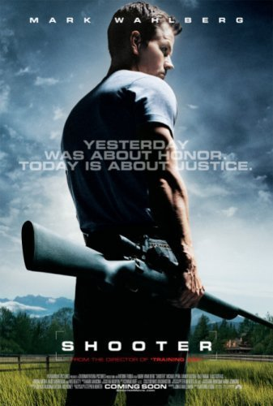
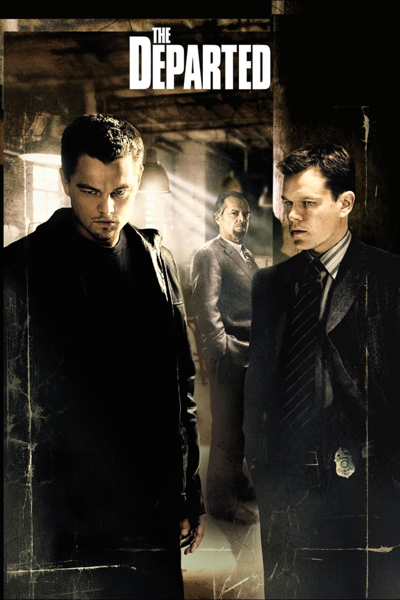
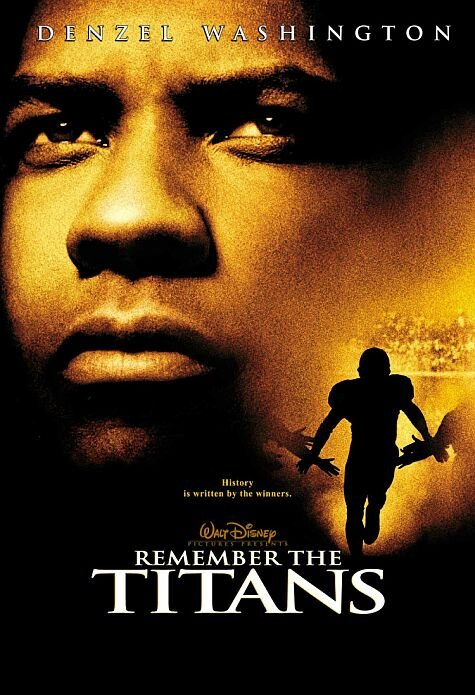
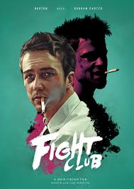
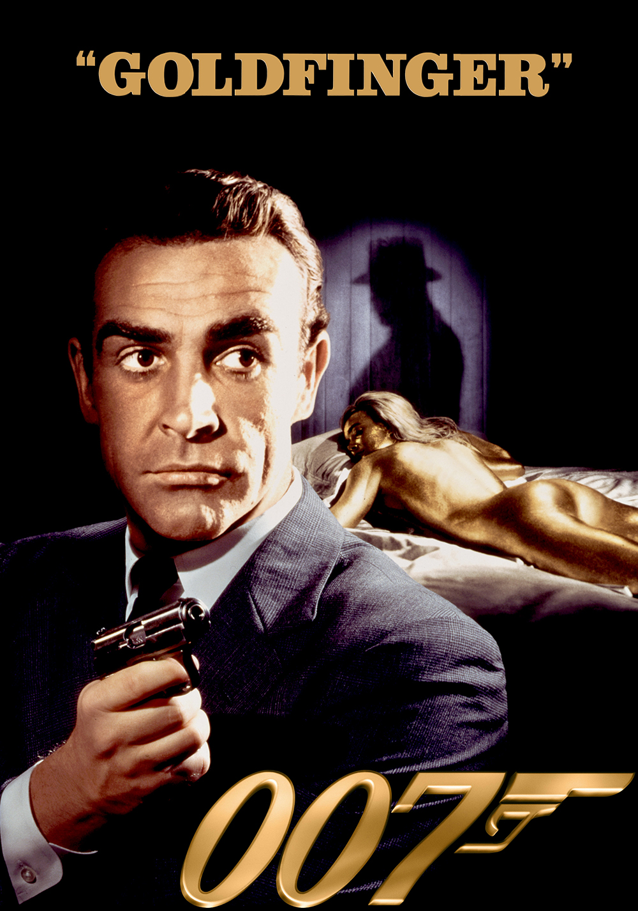
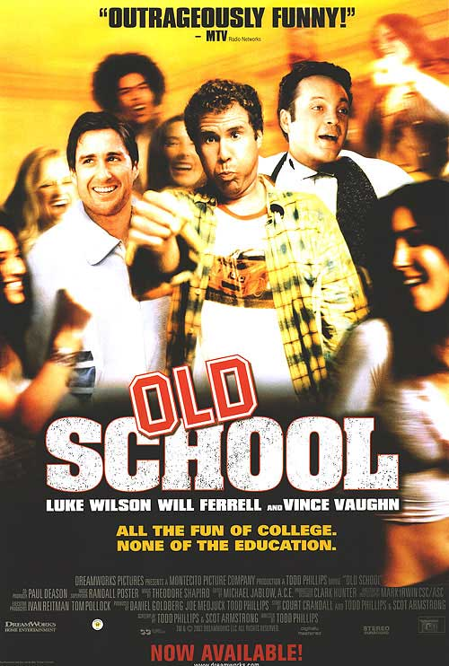

This is my favorite movie of all time. In my opinion, Leonardo DiCaprio has deserved multiple Oscar's in his career, but so far he has received zero. DiCaprio leads a team of inceptors in this movie, and I believe his performance in this film was Oscar-worthy.
Check out the trailer!
Shooter

Mark Wahlberg plays a marine in this action packed film, who is framed for the murder of an African politician. He then goes on to do what is necessary to get vengeance and prove he is innocent.
Check out the trailer!
The Departed

Until I saw Inception, this movie was my favorite. Leonardo DiCaprio and Matt Damon star in this film, where they each play the part of a mole (a term used for undercover spy). Damon is working for the Boston police department, being the mole for a gang leader in Boston, while DiCaprio is working for that same gang, but is the mole giving information back to the police. This film is full of drama and twists, and is a must watch.
View the trailer below!
Dallas Buyer's Club
Matthew McConaughey stars in this film in which his character is diagnosed with HIV. During the time that movie was set in, HIV/AIDS treatment was not very well tested and was very dangerous. So McConaughey's character creates his own club where he gives effective HIV/AIDS medicines to anyone who joins his club. McConaughey won Oscar for Best Lead Actor in this film, and it was well deserved
Check out the trailer below!

Denzel Washington stars as a football coach in this film that was set in the time period of racial tension. Even if you are not a fan of football, the story around the film is a great one. I've seen this flick around 20 times and it never gets old.
Give the song a listen below!
Fight Club

Edward Norton and Brad Pitt star in this critically acclaimed classic. Norton plays a character who suffers from delusions and imsonia. Norton's character befriends Pitt's character and they form what is known as a fight club. Like it is said in the film, "The first rule about fight club, is you don't talk about fight club,", so therefore I will not spoil any more of the it for you and let you enjoy it yourself.
Check out the trailer below!
Goldfinger

Agent 007 takes on enemies Goldfinger and Oddjob in my favorite James Bond film. Sean Connery places the role on James Bond.
Check out the trailer below!
Old School

Actors Vince Vaughn, Luke Wilson, and Will Ferrell star in this film, where Wilson's character buys a house on a college campus. The three then to decide to start a fraternity at the house. This is one of the best comedies I have seen and I highly recommend it.
Check out the trailer below
Elf
With Christmas rapidly approaching, I'd like to share my favorite Christmas movie. Will Ferrell stars as Buddy the Elf, and he decides to leave his home in the North Pole to find his father in New York City. This is a must watch during the holiday season.
Check out the trailer!
The Revenant
The Revenant comes out this Christmas, and this might be the film that finally gets Leonardo DiCaprio his long overdue Oscar award. Stranded in the wildnerness after being mauled by a bear, DiCaprio's character must try to survive the wildnerness and then seek revenge on those who left him to die.